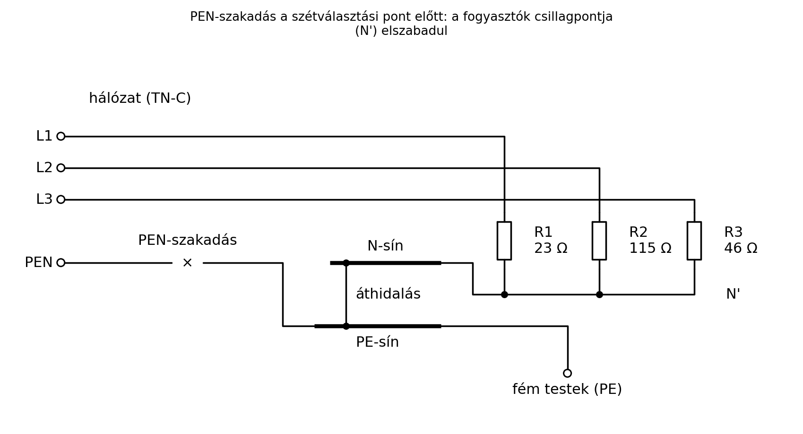

A kapcsolódó elmélet: tankönyv, 21.2 alfejezet.
A PEN-szakadás veszélyét eddig csak kimondtuk; most számszerűen is megnézzük, mert a helyszínen ez a „minden lámpa furcsán világít, a hűtő leégett” hibakép. Tegyük fel, hogy a háromfázisú TN-C-S csatlakozás PEN-vezetője a szétválasztási pont előtt megszakad (például a csatlakozókábel kötése kiég). A fogyasztói oldalon az N-sín és a PE-sín az áthidaláson át továbbra is össze van kötve.

Kövesd végig a rajzon: a három fogyasztó csillagpontja (N’) az N-sínre fut, az N-sín az áthidaláson át a PE-sínre, a PE-sín pedig minden fém testre. A transzformátor csillagpontja felé viszont nincs út – a fogyasztók csillagpontja „elszabadul”, és ott áll be, ahol a három fázisáram fázorösszege nulla lesz.
Számítás (eredmények). A csillagpont-eltolódás kiszámítását (Millman-tétel) a Háromfázisú teljesítmény, aszimmetria és a nullavezető (tankönyv, 7.3) alfejezet vezeti le, ugyanezzel az adatsorral; itt csak az eredményeket használjuk. Adott: , (2,3 kW), (460 W), (1,15 kW).
A fogyasztók feszültsége: L1 ≈ 146 V, L2 ≈ 310 V, L3 ≈ 261 V. A nagy (2,3 kW-os) fogyasztó alulfeszültséget kap, a kis (460 W-os) fogyasztó 310 V-ot – ez a túlfeszültség az elektronikát (tápegységeket, hűtő vezérlését) tönkreteheti. Ami a PEN-szakadásnál ezen felül veszélyes: mivel a PE az N-sínhez van kötve, minden I. osztályú készülék teste a földhöz képest kb. 95 V-ra kerül – az érintési feszültség messze az 50 V-os határ fölött van, és ezt egyik védelem sem kapcsolja le. Az ismételt földelés és a fő EPH ezt a feszültséget csökkenti, de nem szünteti meg.
Szélső eset: csak egy fázis terhelt. Ha csak L1-en van fogyasztó (például egy bojler), a fogyasztón nem folyik áram, így nincs rajta feszültségesés: . Minden PE-re kötött test – a mosógépé, a hűtőé, a fürdőszobai csaptelepé az EPH-n át – teljes fázisfeszültségre kerül. A FI-relé ezt nem érzékeli, mert a védett körökben nincs differenciaáram (az áram nem folyik, csak a potenciál emelkedik meg). Ez magyarázza az Alapvédelem, hibavédelem, kiegészítő védelem (tankönyv, 21.1) alfejezet bojleres esetét.
Szabály. A PEN-vezetőt nem szabad megszakítani (kapcsoló, biztosító nem lehet benne); keresztmetszete és kötései ezért kritikusak (ellenőrizendő: a PEN legkisebb keresztmetszete, MSZ HD 60364-5-54). A kockázatot az ismételt földelés, a fő EPH és – ahol alkalmazzák – a PEN-felügyelet csökkenti.
Hibakép-felismerés. Ha egyes fázisokon az izzók túl fényesek vagy leég az elektronika, máshol halvány a fény, és a feszültség a terheléssel együtt ugrál, gyanakodj PEN-szakadásra. Teendő: a főkapcsolót azonnal le kell kapcsolni, és értesíteni kell a hálózati engedélyest; a csatlakozás javítása nem a fogyasztói szerelő feladata.
Cél. Egy kétszobás lakás régi TN-C szerelésének (kéteres aljzatkörök, a PEN-re kötött aljzat-védőérintkezők) átalakítása TN-C-S rendszerűre.
Biztonsági korlát. A munkát csak jogosult villanyszerelő végezheti; tanulóként tanműhelyben vagy közvetlen felügyelettel. A mérőhely és az azt megelőző szakasz (plombált részek) a hálózati engedélyes hatásköre.
Az öt biztonsági szabály minden beavatkozás előtt:
Előzetes egyeztetés. A PEN-szétválasztás helyét és a főkapcsoló pólusszámát a hálózati engedélyes feltételei szerint tisztázzuk (ellenőrizendő); ellenőrizzük a lépcsőházi felszálló állapotát (keresztmetszet, kötések), valamint hogy van-e fő EPH és földelő.
Anyaglista (példa). Lakáselosztó 3 × 12 modul; N- és PE-sín; kétpólusú (háromfázisú ellátásnál négypólusú) FI, 40 A, 30 mA, A típus; kismegszakítók; 3×2,5 és 3×1,5 mm² réz vezeték (PE-érrel); 10 mm² zöld-sárga vezető a PEN és a PE-sín bekötéséhez (ellenőrizendő: PEN-keresztmetszet, MSZ HD 60364-5-54); 6 mm² EPH-vezető, EPH-sín, csőbilincsek; kötődobozok, feliratozó.
Lépések.
Tilos.
Ellenőrzés és mérés (sorrendben, lásd Szemrevételezés, működési próbák, kikapcsolt állapotú vizsgálat (tankönyv, 24.1), Mérések I.: folytonosság, szigetelési ellenállás, földelés (tankönyv, 24.2), Mérések II.: hurokimpedancia, zárlati áram, FI-vizsgálat (tankönyv, 24.3)):
Elfogadási kritérium: minden mérés megfelel, a körjegyzék és a rajz egyezik a valósággal, a jegyzőkönyv kitöltve (Jegyzőkönyv, szabványossági felülvizsgálat és hibakeresés (tankönyv, 24.4)).
Tipikus hibák.
Munkaidő (tájékoztató becslés): kétszobás lakásnál vésés és helyreállítás nélkül 1–2 nap két főre.
Válaszold meg a kérdéseket, majd nézd meg a
### Megoldások elején az „Önellenőrzés – válaszok”
részt!
1. feladat (A). Értelmezd a következő hálózati rendszer jelölést: TT.
2. feladat (A). Sorold fel, hogy a TN-C-S rendszerben hol kell a PEN vezetőt szétválasztani, és mi történik a szétválasztás után.
3. feladat (B). Egy TT rendszerben 30 mA érzékenységű FI-relét alkalmaznak, és a megengedett érintési feszültség 50 V. Mekkora lehet elvileg a testföldelő legnagyobb ellenállása? Számold ki, és ellenőrizd a nagyságrendet!
4. feladat (B). Rajzold le (szövegesen vagy a
circuit diagramhoz hasonló vázlaton) a TN-S rendszer elvi
kapcsolását a transzformátortól a fogyasztóig, jelölve az L1, N, PE
vezetőket és a transzformátor földelt csillagpontját!
5. feladat (C). Egy régi, TN-C rendszerű lakóépületben a felújítás után a mosógép fémteste enyhén „bizserget”, a FI-relé pedig néha leold. Milyen hibákat érdemes keresni? Sorolj fel legalább két lehetőséget, és indokold meg mindegyiket!
6. feladat (C). Egy új építésű társasházban a közcélú hálózat PEN vezetővel érkezik. Hová kell helyezni a PEN szétválasztást ahhoz, hogy a lakásokban ötvezetékes (a szétválasztás után TN-S jellegű) hálózat legyen, és a fürdőszobai körökben 30 mA-es FI-relé is megbízhatóan működjön? Indokold a választ!
7. feladat (D). Feszültségmentes állapotban egy lakáselosztóban ellenőrizned kell a TN-C-S rendszer védő- és nullavezetőinek jelölését és folytonosságát. Milyen lépéseket teszel a feszültségmentesítés öt biztonsági szabálya szerint, és milyen mérést végeznél a PE és N vezető szétválasztásának igazolására?
8. feladat (C). Egy TN-C-S csatlakozás PEN-vezetője a szétválasztás előtt megszakad. Fogyasztók (ohmos, csillagban): L1: 1 kW, L2: 2 kW, L3: nincs terhelés. Mekkora feszültséget kap a két fogyasztó, mekkora a fém testek potenciálja, és mekkora feszültséget kapna egy L3-ra éppen bekapcsolt készülék?
A TT jelölés első betűje T: a tápláló rendszer egy pontja (rendszerint a csillagpont) közvetlenül földelve. A második betű T: a fogyasztói testek szintén közvetlenül, de egymástól független földelőhöz csatlakoznak. Tehát a TT rendszerben a készülékek testjei nem a tápláló rendszer nullapontjához kapcsolódnak, hanem saját földelőn keresztül a talajhoz.
A PEN vezetőt a fogyasztói berendezés bejövetelénél, általában a mérőhelynél vagy a főelosztóban kell szétválasztani. A szétválasztás után PE és N vezetőt külön kell vezetni, a PE sínt lehetőleg ismételten földelni kell, és a PE és N vezetőt a továbbiakban tilos összekötni.
Adott:
,
.
Keresett:
legnagyobb megengedett értéke.
Az elméleti maximum körülbelül , ami nagyon nagy, és a gyakorlatban nem tekinthető jó földelésnek. A méréseknél és a kivitelezésnél általában ennél jóval kisebb, néhány ohm vagy néhány tíz ohm a cél, mert a talajellenállás időben változik, és a FI-relé megbízhatóságát is meg kell őrizni. (ellenőrizendő: a hatályos szabvány és a helyi követelmények szerinti gyakorlati érték)
A TN-S rendszerben a transzformátor csillagpontja földelve van, és a földelt pontból indul a N vezető (világoskék). A PE vezető (zöld-sárga) is erre a földelt pontra csatlakozik, de külön ágként megy a fogyasztóhoz. A fogyasztó fázist kap az L1 vezetőről (barna), a nulla a N vezetőre, a fémtest pedig a PE vezetőre köt. Így a fázis és a PE között testzárlatkor a hibaáram a védővezetőn fémesen folyik vissza a transzformátorhoz, és a védelmi lekapcsolás gyorsan működhet.
Három jellemző lehetőség:
A PEN szétválasztást a csatlakozási ponton vagy a mérőhelyen, de mindenképpen a lakáselosztók előtt kell elvégezni. Így a lakások felé már ötvezetékes (a szétválasztás után TN-S jellegű) hálózat megy, és a fürdőszobai körök külön PE és N vezetőt kapnak. A FI-relé a szétválasztás után érzékeli a differenciaáramot; ha a PE és N vezeték bárhol össze lenne kötve, a FI-relé leoldana, vagy a védelme hatástalanná válna.
Biztonsági korlát. Hálózati feszültségű munkát csak jogosult személy végezhet; a feladat tanműhelyi környezetre vagy oktatói felügyeletre vonatkozik.
Az öt biztonsági szabály szerint: 1. Lekapcsolás: a lakáselosztó feszültségmentesítése a főkapcsolóval vagy kismegszakítóval. 2. Visszakapcsolás elleni biztosítás: a kapcsolót le kell zárni vagy táblázni. 3. Feszültségmentesség ellenőrzése: előzetesen ellenőrzött kétpólusú feszültségvizsgálóval minden vezetőpár között (L1–L2, L2–L3, L1–L3, Lx–N, Lx–PE, N–PE), majd a vizsgáló újbóli ellenőrzése ismert feszültségforráson (nem fázisceruzával). 4. Földelés és rövidre zárás: kisfeszültségű lakáselosztóban általában nem szükséges, de a munkavégzés szabályai szerint, ha indokolt, el kell végezni. 5. Szomszédos feszültség alatti részek lefedése: ha a közelben van feszültség alatt lévő rész, le kell takarni.
Ezután folytonosságméréssel igazoljuk a PE-sín és a testek, illetve az N-sín és a nullapontok összeköttetését. Az N és a PE különállását úgy ellenőrizzük, hogy a lakáselosztóban a bejövő N-vezetőt (feszültségmentes állapotban) az N-sínről leválasztjuk, és az N-sín (a lakás összes N-vezetője) és a PE-sín között szigetelési ellenállást mérünk; a vártnál kisebb érték lakáson belüli N–PE összekötést jelez. A szétválasztási ponton az N–PE összekötés szándékos, ezért leválasztás nélkül a két sín között kis ellenállású folytonosság is mérhető, ami nem hiba. A szemrevételezés során ellenőrizzük a színjelöléseket és a feliratozást is.
Adott: , , , L3 terheletlen. Mivel L3-on nem folyik áram, a két fogyasztó sorosan az L1–L2 vonali feszültségre kapcsolódik:
Az 1 kW-os (nagyobb ellenállású) fogyasztó kapja a nagyobb, 267 V-os feszültséget (+16 %), a 2 kW-os csak 133 V-ot. A fogyasztói csillagpont (N’) az L1–L2 vonali feszültség osztópontjában van; a transzformátor csillagpontjától mért távolsága a fázorábrából (115 V a vonal felezőpontjának távolsága a csillagponttól, 66,7 V = 266,7 V − 200 V az osztópont eltolódása). A fém testek tehát kb. 133 V-on vannak a földhöz képest (ismételt földelés nélkül). Egy L3-ra éppen bekapcsolt készülék az L3 és N’ közötti feszültséget kapná: kb. 351 V – ez tönkreteheti. Tanulság: PEN-szakadásnál a feszültségek a terheléstől függenek, egy újabb készülék bekapcsolása mindent átrendez. A Háromfázisú teljesítmény, aszimmetria és a nullavezető (tankönyv, 7.3) alfejezet Millman-képlete ugyanezt az eredményt adja.